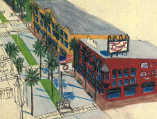
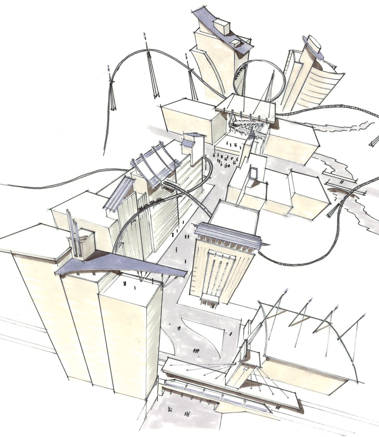

Jeffrey Lurie, AIA, LEED AP, Registered Architect


The above rendering was done by hand, without the aid of any computer models as an “underlay”. This was a self test - after working with Sketch-up for a while, I wanted to see if I could reproduce the same types of perspective views without using the model as a guide. I sketched it out first, and then inked over it with a straight edge as my only guide.
More of my hand drawing skills are visible in my site planning, sketchbook, and concept pages.